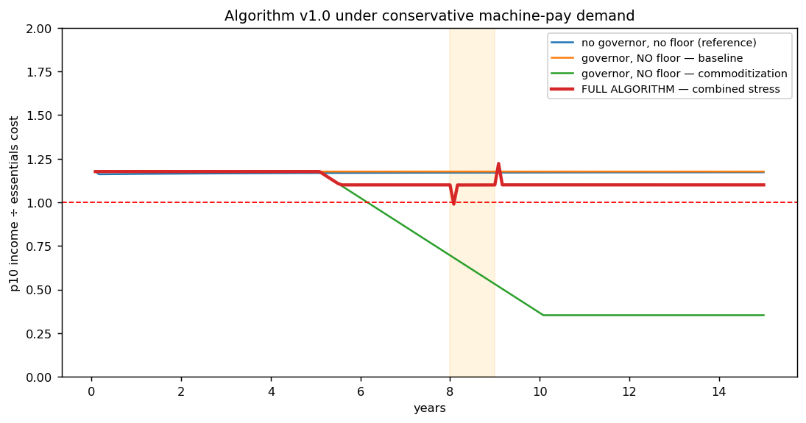
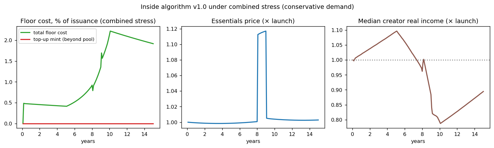

In plain language
Companion to RESULTS - EVE Sim v3. Companion added July 11, 2026 — the v1–v5-era runs predate the plain-language convention; written from the committed RESULTS as it stands today (including any verification-pass corrections already applied in that file), with no reinterpretation.
The question
v1 tested a bare concept; v2 tested generic patches. v3 tests the actual algorithm written into the canon (01 Canon/EVE Algorithm v1.0): a machine-pay data economy, 60/15/10/10/5 routing with a pool-funded floor, the daily taper, effort weights, and the Legacy-choice halved death burn — in a deliberately harder world, where data income now varies person to person and the bottom decile is ~6× poorer in data earnings than v1/v2 assumed. Same pre-registered bar as always.
What we found
The full algorithm passes all 10 scenario-and-demand combinations, with inflation ≈ 0% throughout. Three structural results stand out. First, machine-pay solved v2's biggest failure exactly as predicted: institutions need data in real terms, so data income automatically tracks the price level — even the bare design now holds the bottom decile at 1.17 at baseline, which bare EDEN never achieved before. Second, the floor was never minted: in every scenario the 10% verification pool covered it entirely — top-up minting was 0.0% in all runs, with floor cost peaking at 2.2% of issuance. In v2 the floor needed printed money; here the algorithm's own routing finances its safety net with room to spare. Third, the division of labor is clean — machine-pay handles indexation, the governor handles price stability, the floor catches the distribution tail — and removing any one component brings back a specific, identifiable failure.
The honest catch
Bare still isn't viable — for the creators' sake, not the poor's: without the governor, 9.6%/yr inflation cuts the median creator's real income to 0.54× over 15 years (versus 1.27× with it), and bare still fails commoditization. Commoditization remains the soft spot even in the full algorithm: creator real income dips 9–11% there. The 1-month dip to ~0.99 at drought onset persists (fix: index the floor to a 7-day rolling EBI instead of monthly). And the big things are still assumed, not proven — the level of institutional data demand (calibrated at ~10% of mint value, unknowable pre-launch), an honest EBI oracle, perfect identity enforcement, no fraud. Those are pilot questions, not simulation questions.
Where this leaves the project
Three simulation generations, one bar throughout: v1 (bare concept) fails under pessimistic assumptions; v2 (generic patches) passes, but the floor needs printed money; v3 (the algorithm as specified) passes everything, on harder assumptions, with the safety net self-funded by the routing. The remaining risks — identity, oracle integrity, fraud, adoption, regulation — are real-world ones no simulation can retire.
One line
Modeled as actually specified, the v1.0 algorithm passes every scenario on harder assumptions than ever — with the safety net fully paid for by its own routing (zero top-up minting, cost peaking at 2.2% of issuance) — and what remains is the real world: identity, oracle honesty, fraud, and adoption.
Words used here (added July 18, 2026 — plain-language house rule; the text above is unchanged). Machine-pay — AIs and institutions must pay people, in existing EVE, to use their data; machines never create money. Minting — creating brand-new EVE; only verified live human engagement does it. Routing (60/15/10/10/5) — the automatic split of every newly minted EVE into fixed slices (creator, upstream works, verification pool, floor, protocol); money moves by formula, not by budget vote. Floor — the guarantee that anyone can earn the cost of essentials through verified work. Top-up minting — printing extra money to cover the floor when its pool slice falls short; 0.0% means the printer never switched on. Issuance — the flow of newly created money; costs are quoted as shares of it. Governor — the automatic, committee-free rule that adjusts the mint rate to keep prices flat. Taper — the daily fade-out: each additional hour of engagement mints less, capping what one day can earn. Effort weights — multipliers paying active engagement more than passive consumption. EBI — the essentials-basket index: what basics actually cost, measured locally. Oracle — the system's price-measuring instrument — the thermometer the economy reads; "an honest oracle" means nobody has rigged the thermometer. Bottom decile / 10th percentile — the poorest 10% of people / the person poorer than 90% of them; the test's standing subject. Commoditization — data becoming an interchangeable bulk good whose price collapses; still the soft spot here. Death burn — part of a person's unspent money is destroyed at death rather than passed on; choosing Legacy halves what is burned.
(Dated note, July 18, 2026: this file's title and body carry the v3-era "pays for itself / self-funded" result faithfully, and are kept unedited — but read that as an in-model result from this early chassis, since retired as a general claim. The harder open-economy and rebuild tests (v6.x, v13.1) found no scenario where the floor fully pays for itself; every real activation needs a real funder, and the durable result is that a funded floor is cheaper than traditional welfare delivery. Current framing: the reframed public docs and the Decision Record.)
Figures


Technical results
Same pre-registered criterion as v1/v2 (p10 below essentials 3+ consecutive months = fail). This run models the actual proposed algorithm from 01 Canon/EVE Algorithm v1.0: machine-pay data economy, 60/15/10/10/5 routing with pool-funded floor, daily taper, effort weights, Legacy-choice halved death burn — and a harder world than v2: per-person data income is now heterogeneous (lognormal), making the bottom decile ~6× poorer in data earnings than the uniform assumption v1/v2 used.
Verdict: the full algorithm passes all 10 scenario × demand combinations.
| Scenario | Conservative demand | Optimistic demand | Floor cost (max) | Top-up minting needed |
|---|---|---|---|---|
| Baseline | PASS | PASS | 0.5% | none |
| Drought shock | PASS | PASS | 0.5% | none |
| Commoditization | PASS | PASS | 2.1% / 1.2% | none |
| Automation | PASS | PASS | 0.3% | none |
| Combined stress | PASS (1-mo dip, within criterion) | PASS | 2.2% / 1.2% | none |
Inflation ≈ 0% in all full-algorithm runs. Median creator real income: +26% baseline, +55% automation, −9 to −11% under commoditization (the one soft spot), +70% optimistic baseline.
The headline findings
1. Machine-pay structurally solved v2's biggest failure — exactly as predicted. In v2, "finite data demand" sank the bottom decile because data income grew slower than prices. Under machine-pay, institutional demand is denominated in real terms (institutions need data regardless of the unit of account), so EVE-denominated data income automatically tracks the price level. The indexation that v2 had to assume is now a structural property of the mechanism. Evidence: even the bare design (no governor, no floor) now holds p10 at 1.17 indefinitely at baseline — something bare EDEN never achieved in v1/v2.
2. But bare still isn't viable — for the creators' sake, not the poor's. Bare v3 runs 9.6%/yr inflation and cuts the median creator's real income to 0.54× over 15 years, while the governor version delivers 1.27× with ~0% inflation in that run (a modeled, later-retired headline — index governance remains open). The governor's constituency turns out to be creators, not the poor. And bare still fails commoditization.
3. The floor was never minted — the routing pays for it entirely. Across every scenario, including combined stress with heterogeneous data incomes, the 10% verification pool fully covered the floor: top-up minting was 0.0% in all runs, with total floor cost peaking at 2.2% of issuance. In v2 the floor required printed money; in v1.0 the algorithm's own routing finances its safety net with room to spare. The "more efficient, effective, free, and fair engine" claim now has a self-funding safety mechanism inside it.
4. Division of labor is clean — every component has exactly one job. Machine-pay handles indexation. The governor handles price stability (protecting creators). The floor handles the distribution tail and data-value collapse (no-floor fails commoditization at month 74; with floor, it passes at 2.1% cost). The Legacy choice halving the death burn was absorbed by the governor without a trace. Remove any one component and a specific, identifiable failure returns.
5. The harder world didn't break it. Heterogeneous data quality (bottom decile earning ~17% of the mean) is a much tougher test than v2's uniform incomes — the full algorithm passed anyway, with the floor quietly catching the tail at ~0.3–0.5% of issuance in normal times.
Residual issues
- The 1-month dip to ~0.99 at drought onset persists (floor indexes to last month's price). Within the criterion, but fix it: index the floor to a 7-day rolling EBI instead of monthly.
- Commoditization still erodes creator real income ~10% via the shrinking validator pool remainder — mild, but worth knowing.
- Still assumed, not proven: the level of institutional data demand (calibrated at ~10% of mint value; the real number is unknowable pre-launch), an honest EBI oracle, perfect identity enforcement, no fraud. These are pilot questions, not simulation questions.
Where this leaves the project
Three simulation generations, one pre-registered criterion throughout:
- v1 (bare concept): fails under pessimistic assumptions; survival depends on luck.
- v2 (generic patches): passes, but the floor needs printed money and the governor abstraction was too generous.
- v3 (algorithm v1.0): passes everything, on harder assumptions, with the safety net self-funded by the algorithm's own routing and honest accounting throughout.
The algorithm as specified in 01 Canon/EVE Algorithm v1.0 is now a stress-tested design. The remaining risks are real-world ones — identity, oracle integrity, fraud, adoption, regulation — which no simulation can retire. Next stops: Devan's own answers vs. this draft, then the white paper's Monetary Mechanics section written from the tested spec.
Files
eve_sim_v3.py— full modelfig8_v3_earnability.png— core resultfig9_v3_internals.png— floor cost, price, creator real income under combined stressresults_v3.json— all verdicts
Raw data